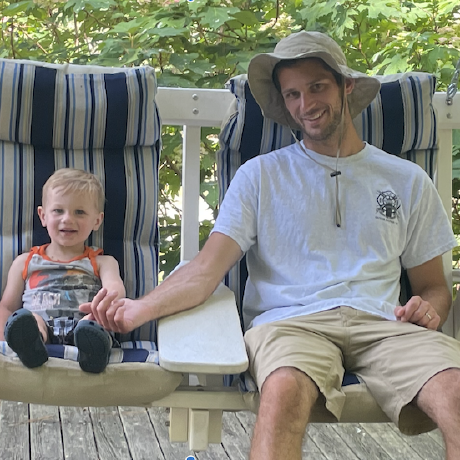

Hi, I'm Brent. I studied computer science at JMU with a focus on systems development. I was fascinated with all aspects Operating Systems and Embedded Systems. I gravitated towards Red Hat, and in the spring of 2022 I jumped at the opportunity to work for Red Hat. I currently work on Openshift as a member of the Installer/Openshift Ansible team. I specialize in GO development for the Google Cloud Platform and python/bash development for Ansible with the Installer.
I spent five years with a startup that was bought by a large corporation. I developed autonomous surface vessels. Surface Vessels? Yes, that is correct, I worked on autonomous boats. The work included boats from four feet long to 200+ feet long where the swarm size was one to five.
I have three years of experience developing Naval communication systems. These systems included runtimes of at least one year with a 99.7% minimum runtime availability. My first professional development experience included a massive distributed (federated) simulation environment.
My life isn't only defined by my contributions at work. I enjoy spending my time outside with family and friends. I love surfing, soccer, and rock climbing. If I'm not home, chances are you can find me at the beach. My personal programming experience draws from my love of nature and sports. If you ask my wife, she would say that I am overly invested in fantasy sports. The truth is that I enjoy the probability and statistical features of fantasy sports.
Nautical

Parsing NOAA buoy information.
Predictor

Predicting local climate change effects.